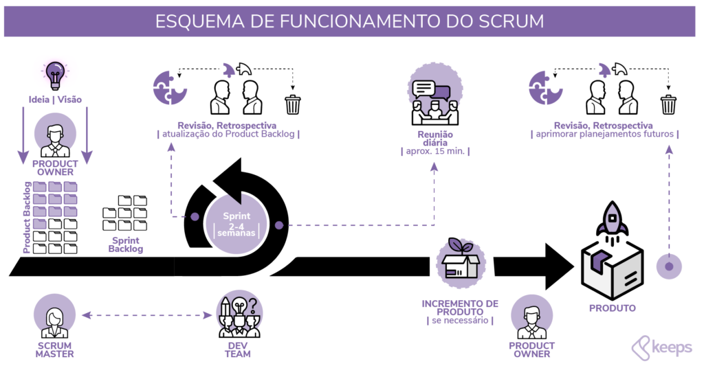

e Método SCRUM
A Engenharia de Software é uma área da computação dedicada ao desenvolvimento, planejamento, construção, testes e manutenção de sistemas de software. Seu objetivo é aplicar princípios de engenharia no processo de criação de programas para garantir qualidade, eficiência e confiabilidade.
Com o crescimento da tecnologia e da complexidade dos sistemas, tornou-se necessário utilizar métodos organizados para desenvolver software. A engenharia de software ajuda equipes a trabalhar de forma estruturada, evitando erros, reduzindo custos e melhorando a produtividade.
Ela envolve diversas atividades como análise de requisitos, modelagem do sistema, implementação, testes e manutenção contínua. Além disso, utiliza metodologias e ferramentas que auxiliam no gerenciamento de projetos de software.
Os fundamentos da engenharia de software são princípios e práticas utilizadas para garantir que um sistema seja desenvolvido de maneira organizada e com qualidade. Esses fundamentos ajudam equipes a criar softwares confiáveis, seguros e fáceis de manter.
Nesta etapa são identificadas as necessidades do cliente ou usuário. Os requisitos definem o que o sistema deve fazer e quais funcionalidades precisa possuir.
O projeto define a estrutura do sistema, como os componentes irão funcionar e como eles se comunicarão. Essa etapa serve como um planejamento técnico antes da programação.
É a fase em que os programadores desenvolvem o software utilizando linguagens de programação e ferramentas adequadas para transformar o projeto em código.
Os testes verificam se o sistema funciona corretamente e se atende aos requisitos definidos. Essa etapa é essencial para identificar erros e garantir a qualidade do software.
Após o software ser entregue, ele pode precisar de correções, melhorias ou novas funcionalidades. A manutenção garante que o sistema continue funcionando corretamente ao longo do tempo.

O SCRUM é um framework ágil utilizado para gerenciamento e desenvolvimento de projetos, especialmente na área de software. Ele foi criado para ajudar equipes a trabalharem de forma colaborativa, adaptável e eficiente.
Diferente dos métodos tradicionais de desenvolvimento, o SCRUM divide o trabalho em ciclos curtos chamados Sprints, que normalmente duram de duas a quatro semanas. Ao final de cada sprint, a equipe entrega uma parte funcional do produto.
Durante o processo, a equipe realiza reuniões frequentes para acompanhar o progresso do projeto e identificar possíveis dificuldades. Esse modelo permite adaptações rápidas às mudanças nos requisitos ou necessidades do cliente.
O SCRUM é muito utilizado em empresas de tecnologia porque aumenta a produtividade da equipe, melhora a comunicação e permite entregas contínuas de valor para o cliente.